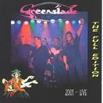

| Artist: | Greenslade |
| Title: | Live 2001 - The Full Edition |
| Label: | self produced GSLCD01 |
| Length(s): | 75 minutes |
| Year(s) of release: | 2002 |
| Month of review: | [05/2002] |
| 1) | Cakewalk | 4.33 |
| 2) | Feathered Friends | 6.38 |
| 3) | Catalan | 8.08 |
| 4) | No Room-But A View | 3.36 |
| 5) | Large Afternoon | 4.06 |
| 6) | Sundance | 8.31 |
| 7) | Wherever I Go | 5.15 |
| 8) | On Suite | 5.56 |
| 9) | In The Night | 6.24 |
| 10) | Bedside Manners Are Extra | 5.11 |
| 11) | Joie De Vivre | 11.19 |
| 12) | Spirit Of The Dance | 3.27 |
On Feathered Friends, the organ is very Emersonian with plenty of swing, but the production is not that loud and over the top bombasm is avoided. This is a vocal track, with John Young doing the vocals. I do like the verses very much, supported as they are by a warm organ sound in the style of Procol Harum, but the conclusion of the chorus spoils it. The overall sound is a laid-back one, for instance when we get the piano with keyboards solo in at two-thirds: the piano tingles, the keyboards wind there way flutingly through the thematic music. As regarding progessiveness, do not expect too much variation within these songs. We do get a keyboard solo now and then, but the overall approach is song oriented and certainly not flashy.
A longer track even is Catalan, which opens with some Spanish styled keyboards. So far so good. Then we get an extremely merry tune, but also some really nice bass playing which follows the Catalan melody instead. This alternation continues for a bit: the typical flamenco styled melody and the merry melody. Then it is time for some meandering keyboards, quite jazzy in outset. The drummer is now also active, inserting his chops wherever he sees the need, giving the music a more plodding and percussive feel, but keeping space for the soloing keyboard. Then the alternation returns, with the ending of the song being quite moody and one where the flamenco part dominates.
No Room-But A View is another vocal track, and one from Large Afternoon. This is pop music, with a jazzy feel underlying it all. It is really not bad, with a good vocal melody and some nice breaks in the melody.
Large Afternoon is an up-tempo instrumental piece with some classical leanings, sometimes a bit too tuneful, but also a good drive on the bass, not forgetting some memorably themes, that run throughout. Certainly no lack in that. Maybe a bit too much swing and meandering for my tastes at the end.
Another major track, in length, is Sundance. Lush tapestries of keyboards open this track, which has some likeness to Catalan (but without the merry melodies). Very sensitive in places, intense but subdued. At the end, a jazzy piano sets in for some pace and activity (and a bit of dissonance even), while stringing on some nice themes as well. One of the more varied and better tracks to be sure.
Wherever I Go is rather melodramatic romantic ballad, while On Suite opens with somewhat cheesy keyboards, while the vocals are on the wavery side. The keyboards this time, are somewhere between a clarinet and a harmonica, and a bit too slow. Like many of the other tracks, the song also features an overly active part (think back to Catalan).
With In The Night, the evenness gets back into the music. This is overall a very moody and melodic track, not really a ballad, but more an anthem like song, in which the keyboards have a bluesy feel. The vocals are again unsteady, but it does not bother me much, in fact when Young reaches the end of the song, his desperation can be felt really well. The final part has a bit more swing, but in a careful, Latin oriented way.
Bedside Manners Are Extra is the title track of an early Greenslade album. The Fender sound is supported by a moody bass. A plaintive vocal track. On the long Joie De Vivre, we open with a typical Emersonian organ. A lightfooted track with heavy hammered piano to add to the rhythmic backing. In the middle the keyboard jazzily meander, again with plenty of swing, but never really rocking, although they seem to try their best here. The ending is really ELP again, quite optimistic and all.
The encore is the shortish Spirit Of The Dance opening in very percussive fashion with very Emersonian keyboard runs on this for the rest very classically tinged tune.